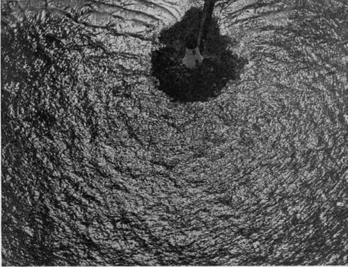

Chapter XXX. Naval Aerial Photography
Description
This section is from the book "Airplane Photography", by Herbert E. Ives. Also available from Amazon: Airplane photography.
Chapter XXX. Naval Aerial Photography
The problems of naval aerial photography are qiute different from those of military aerial work, and on the whole they are more simple. At the same time, photography has played a considerably less important part in naval aerial warfare than in land operations. Photography as a necessary preparation for attack has not figured in naval practice nearly so much as have the record and instruction aspects. To some extent this is due to the nature of the naval operations in the Great War, to some extent to the limitations of ceiling and cruising radius of the naval aircraft.
A photographic reconnaissance, preceding and following a bombardment of shore batteries; a photographic record of the ships at anchor, as at Santiago; a photograph of the forts defending a channel, as at Manila; photographs, quickly developed and printed, of an approaching fleet—all these are possibilities of great usefulness in naval warfare between contestants both of whom "come out" and carry the struggle to the enemy's gates. But in the recent war the use of the submarine, operations under cover of fog, the striving for "low visibility," and the considerable distances to be traversed to reach the enemy lairs, have conspired to limit the development of photography as a major aid to naval combat. Probably when the whole history of the conflict is told we shall learn that the Zeppelins which cruised over the North Sea, keeping the Allied fleet under observation, had a regular routine of photographic work. In the Italian zone, where much of the enemy territory and several important naval centers lay at only short distances over the Adriatic, the naval photographic service more nearly rivalled that of the army than in the English, French and American zone of activity in the Channel and North Sea.
The majority of the photographs made in the British service were obliques, taken by short focus (6 to 10 inch) hand-held cameras. This type was employed partly because of difficulties to be noted presently, in using other forms of cameras, but more especially because such pictures sufficed for the kind of information desired. A hand-held camera formed part of the outfit of each flying boat and dirigible, but, unlike land reconnaissance, planes ascending primarily for picture taking were unknown in their naval service. Usually no photographic objective was predetermined—photographs were made only if objects of interest were come upon. Mapping also formed no part of the seaplane's work. Four plates would be carried, instead of as many dozens in the land machine, and often these would come back unexposed. There were of course some photographic flights planned out beforehand, for the purpose of photographing lighthouses and other landmarks whose appearance from the air should be known to the naval aviator (Fig. 175). Among the accidental and record types of photograph come convoys (Fig. 176), whose composition and arrangement were made a matter of record, particularly if any ship was out of its assigned position. Photographs of oil spots on the sea surface, or other results of bomb dropping, were necessary evidence to establish the sinking of a submarine (Fig. 179). Pictures of all types of ships friendly, neutral, and where possible, enemy—were a much needed part of naval equipment, in particular pictures of friendly destroyers and submarines, which should not be bombed by mistake. For safe navigation it was essential to have photographs of uncharted wrecks (Fig. 181), of buoys out of place and of ships failing to return signals or otherwise:
Fig. 175. - A lighthouse, as the naval flier sees it.
Fig. 176. - A threatened submarine attack. Throwing out a smoke screen to protect a convoy. British official photograph.
Fig. 177. - Submarine coming to the surface. U. S. Naval 'Air Service photograph to comply with rules. The great majority of the pictures were taken from altitudes of not more than 300 meters.
Hand-held cameras for naval work have practically the same design as those for land work. In view of the smaller number of pictures taken on naval trips, and the consequent absence of any need for great speed in changing plates, the ordinary two-plate dark slide has been found satisfactory in the English service. But these are much less convenient than the bag magazines used in the U. S. Naval hand camera (Fig. 31). The sights on the naval hand camera are preferably of the rectangular, field indicating type, especially useful in photographing extended objects such as convoys. As the flying boat travels comparatively slow, it is easy for the observer to stand up to take pictures, and the sight is conveniently placed on top. But if held out over the side for verticals the sight must be on the bottom. Rectangular sights in both positions are provided in the English camera tion. The hydro-airplane, consisting of an ordinary airplane fuselage mounted on two pontoons (Fig. 182), can carry the same kind of photographic equipment as the land machine. But if it has a single central pontoon this is not feasible. The hydro-airplane is, however, largely superseded by the flying boat (Fig. 183), whose fuselage, of boat form, rests directly on the water. In this type of sea plane, views taken (Fig. 186). Naval cameras should be immune from moisture, which means doing away with all wooden slides or grooves. A praiseworthy practice is to carry the camera in a waterproof bag.

Fig. 178. - Dropping depth bombs.
Fig. 179. - The submarine destroyed. Destroyer on tell-tale oil patch. British official photographs.
Fig. 180. - A convoy at anchor in port.
Fig. 181. - Airplane photography as an aid to salvaging. Position of' wrecked merchantman twelve fathoms down revealed by photograph from the air. Photograph by British Air Service.
Cameras other than of the hand-held form have been little used in sea planes, owing to the difficulties of installavertically downward are not easy to make. In the larger flying boats the hull projects out horizontally a matter of several feet beyond the side of the cockpit. An ordinary in Fig. 185. The possibility of cutting a hole in the bottom of a flying boat to take care of a vertical camera is not entertained in British and American naval cricles. Nevertheless it is the regular practice in the Italian service, with their small high ceilinged flying boats. In them a round hole is cut in the floor, stopped with a plug and rubber gasket. After the boat rises into the air the hole is opened, and the outboard mounting is therefore out of the question. The camera must either be held out at arm's length or else mounted on a long bracket (Fig. 186). The usual place for carrying the camera is in the front cockpit with its magnificent all-round view. Obliques can, too, be taken in great comfort from the side windows behind the wings, as shown regulation Italian camera is set securely in a frame on the floor over the hole (Fig. 187). Photographs are taken to the capacity of the camera, and if it is desired another camera is put in its place, till all its plates have been exposed, and then even a third. Before coming down the hole must of course be closed again. Sliding doors have been designed to close this aperture, but have not proved sufficiently water-tight, although such a device could undoubtedly be worked out.
Fig. 182. - A sea plane.
Fig. 183. - A flying boat.
Fig. 184. - A dirigible or "blimp"—possibly the photographic aircraft of the future.
Fig. 185. - English"Type 18" hand camera on bracket for exposing through side window of flying boat.
British official photograph.
Fig. 186. - Camera mounted in bracket from forward cockpit of flying boat. British official photograph.

Fig. 187. - Italian flying boat with camera mounted on the floor.
With its space for five or more passengers, and with its low speed, the modern flying boat affords an excellent craft for photographic work. There is ample room for any size of camera, and for any style of mounting, if we assume that there is no objection to an opening in the bottom. The low ceiling of these ships, however, prevents their use for certain forms of aerial photography which should be of the greatest importance. Operations against shore stations—harbors, docks, shipyards, ships at anchor, and fortifications—cannot be undertaken for fear of anti-aircraft guns and hostile land planes. The solution of the problem of carrying and launching fast high flying planes from ships will immediately extend the usefulness of aerial photography to coastal work. In the recent war, such of this as was done, along the Belgian coast—the shore batteries, and the results of naval operations at Zeebrugge and Ostend—was done by land planes from territory held by the Allies. The photographic equipment of sea planes of the type suggested will of course present special problems, but the apparatus used will be apt to approximate closely to that of the land planes.
Continue to:
- prev: The Interpretation Of Aerial Photographs. Continued
- Table of Contents
- next: VII. The Future Of Aerial Photography. Chapter XXXI. Future Developments In Apparatus And Methods
Tags
camera, lens, airplane, aerial, film, exposure, photography, maps, birdseye